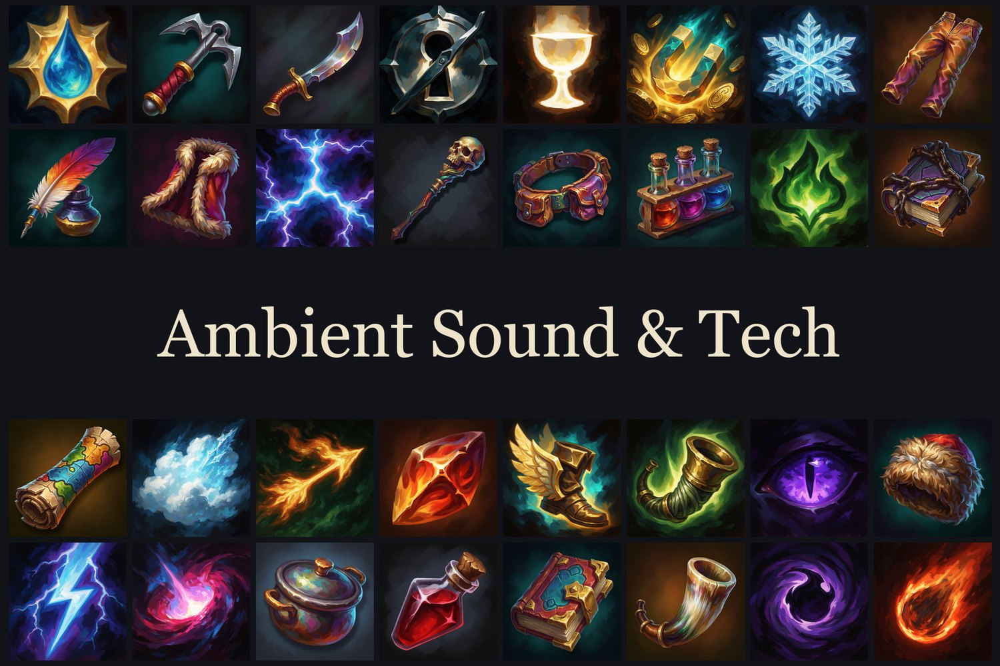
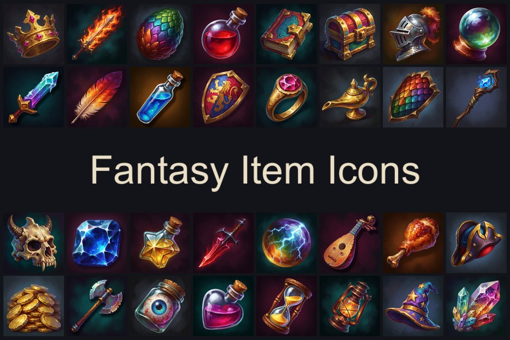
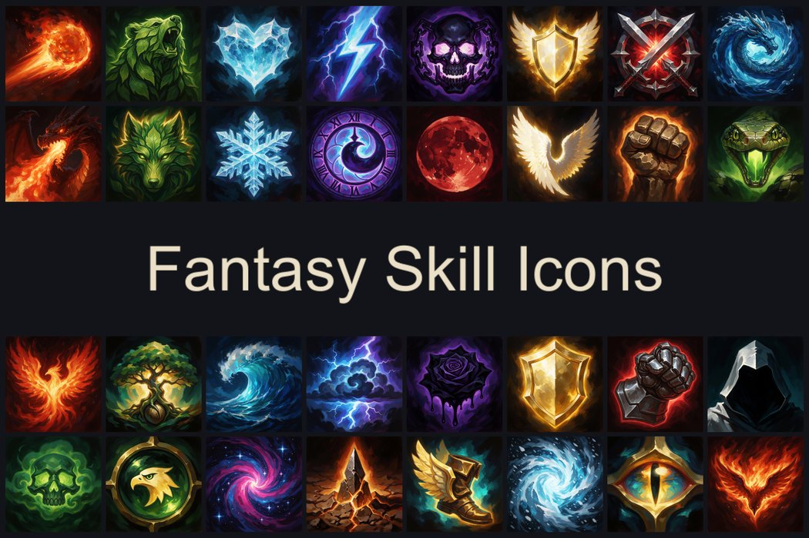
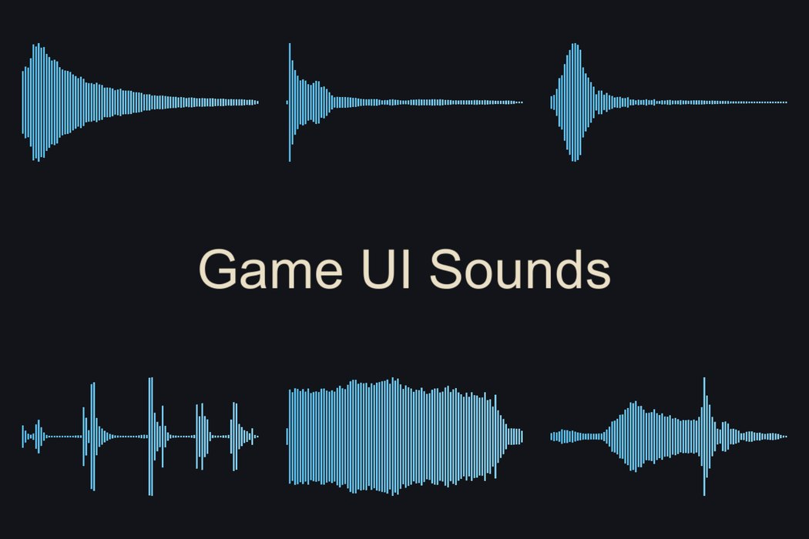
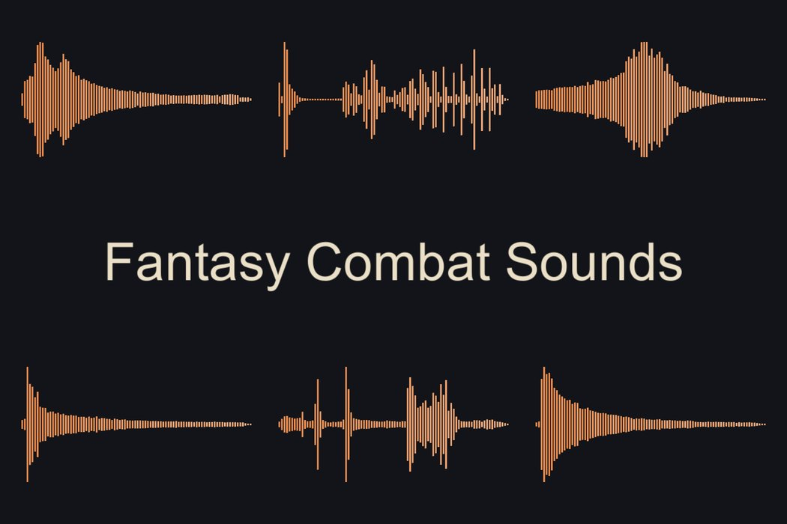
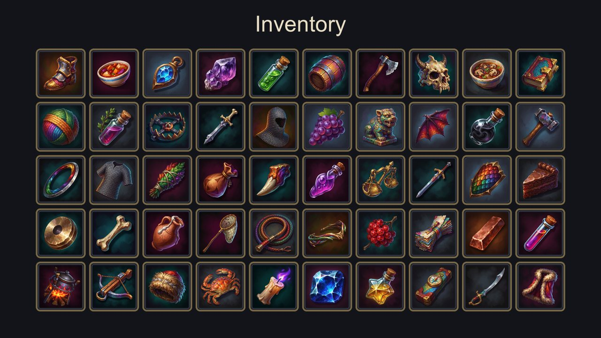
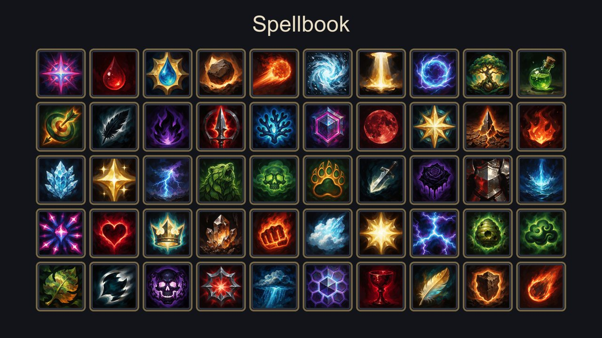

Game icons and sound effects for Unity
Asset packs for fantasy games and game interfaces, ready to drop into a Unity project.


Fantasy Item Icons
285 RPG item icons: weapons, armor, potions, consumables, materials, tools and magic items.

Fantasy Skill Icons
211 spell and ability icons across 15 schools.

Game UI Sounds
115 interface and feedback sounds for menus, shops, rewards and notifications.

Fantasy Combat Sounds
133 fantasy sounds: sword hits, bows, shields, spells, explosions and more.
Work samples

